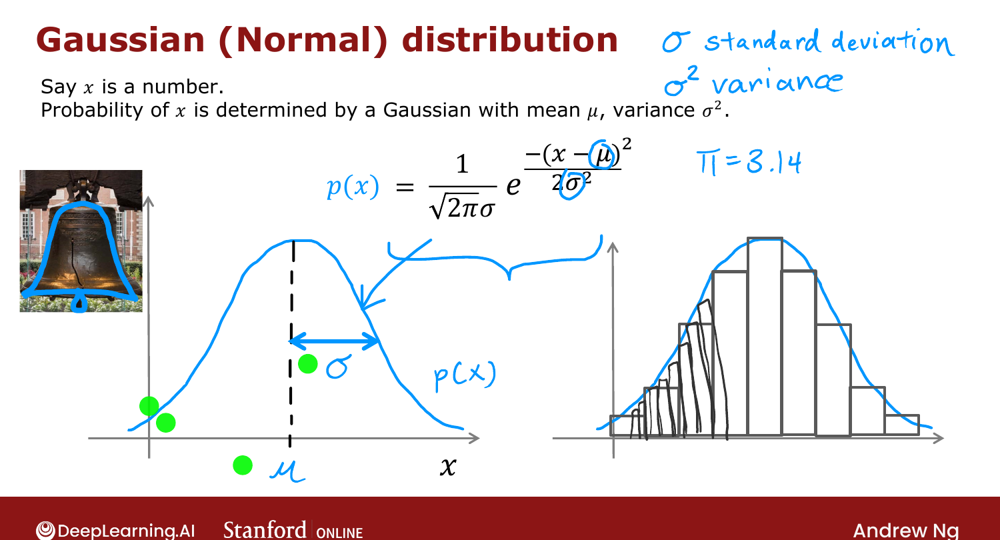
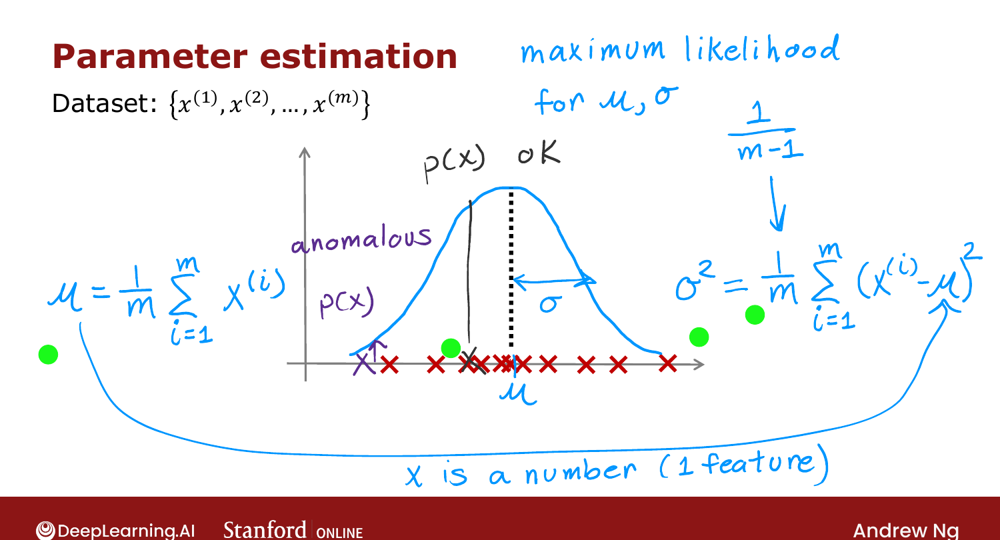

Gaussian (Normal) Distribution¶
Course 3 · Week 1 · AI-generated study aid — not authoritative; trust the lecture & cited sources.
To model \(p(x)\) we use the Gaussian distribution — also called the normal or
bell-shaped distribution (all the same thing). [00:02]
The bell curve¶
If a random variable \(x\) follows a Gaussian with mean \(\mu\) and variance \(\sigma^2\)
(where \(\sigma\) is the standard deviation), then \(p(x)\) is a bell-shaped curve centered
at \(\mu\) whose width is set by \(\sigma\): [01:04]

Official C3 slide — the Gaussian (normal) distribution (DeepLearning.AI / Stanford).How \(\mu, \sigma\) change it: smaller \(\sigma\) → thinner and taller; larger \(\sigma\) →
wider and shorter (the area under the curve always equals 1); changing \(\mu\) slides the
center left/right. [06:17]
Estimating \(\mu\) and \(\sigma^2\) from data¶
Given \(m\) examples (one feature), fit the Gaussian by: [07:09]
\(\mu\) is the average; \(\sigma^2\) is the average squared deviation from \(\mu\). (These
are the maximum-likelihood estimates. Some texts divide \(\sigma^2\) by \(m-1\) instead of
\(m\) — in practice it makes negligible difference; Ng uses \(m\).) [08:39]

Official C3 slide — estimating μ and σ² (DeepLearning.AI / Stanford).With these, a point near the center has high \(p(x)\) (normal); a point far out has low \(p(x)\)
(anomalous). So far this is one feature (\(x\) a number); next we extend to many features. [10:37]
Try it in the browser¶
Try it — fit a Gaussian to each feature — edit the code, then hit Validate for instant ✓/✗ (runs real Python via Pyodide, no setup):
# Tests(case insensitive)(Ctrl+I)
(Alt+: / Ctrl to reverse the columns)
(Esc)